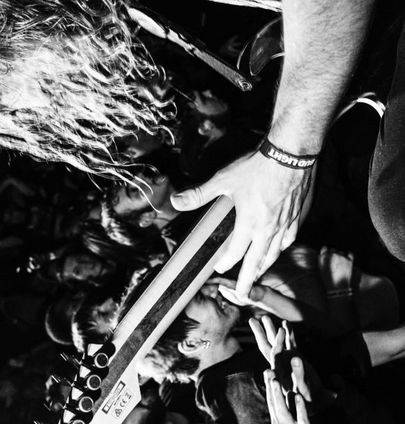
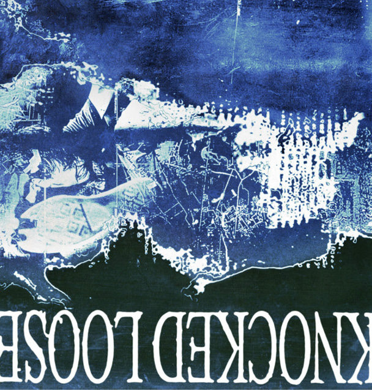

A Different Shade of Blue is the second studio album by American hardcore
punk band Knocked Loose. It was released through Pure Noise Records on 23
August 2019 and produced by Will Putney.
Ahead of the album, a short EP was released containing “Mistakes Like
Fractures” alongside a rerecording of “All My Friends” and a cover of
“Slings and Arrows” by The Warriors.